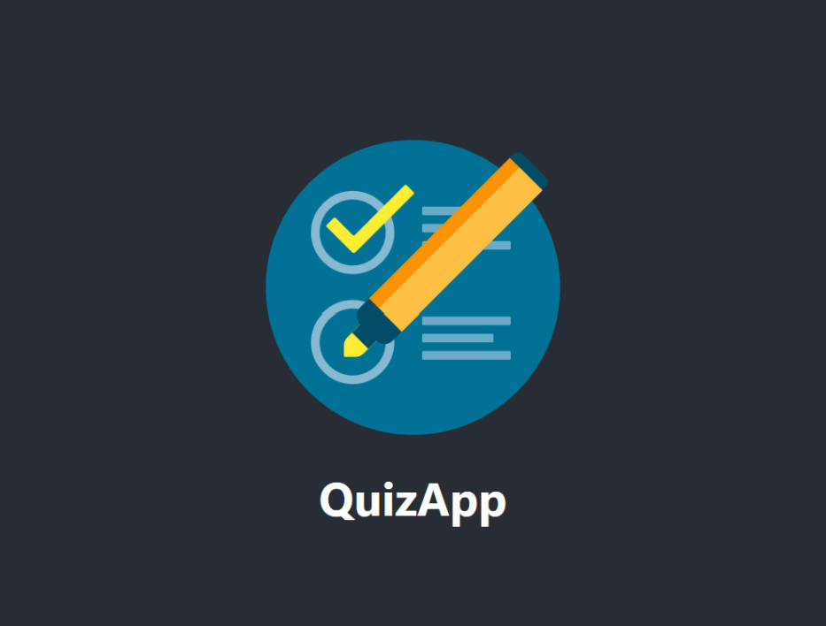
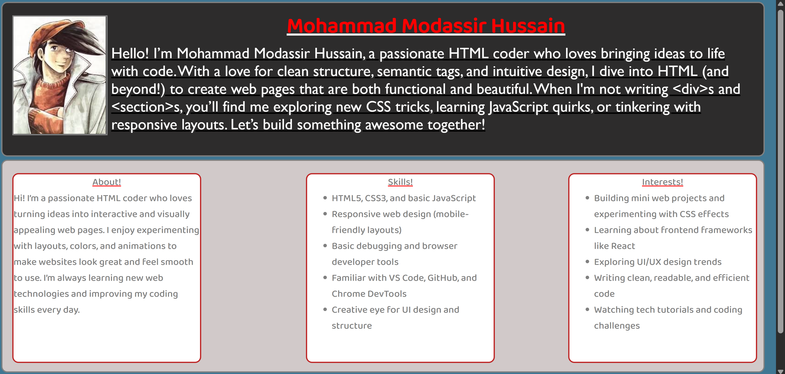

-
Student Database System
A simple database project built using Python and SQL. It allows adding, updating, and deleting student records from a database. This project helped me understand how databases work and how to connect them with Python using SQL queries.
-

Online Quiz App
A basic quiz web app made using HTML, CSS, and JavaScript. Users can answer multiple-choice questions and get instant feedback on their scores. This project helped me practice DOM manipulation and JavaScript event handling.
-
Bank Management System (C)
A console-based mini project written in C that simulates basic banking operations like account creation, deposit, withdrawal, and balance check. This project improved my understanding of file handling and structured programming in C.
-

Personal Portfolio Website
A personal portfolio website designed using HTML and CSS to showcase my projects, skills, and contact details. This project helped me practice webpage structuring, layout design, and responsive styling using CSS.